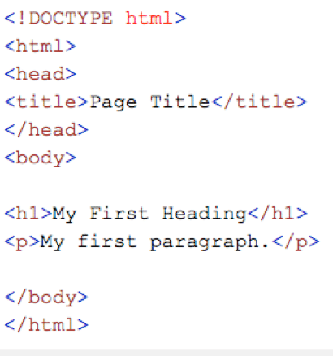

Hypertext Markup Language, also known as HTML is the standard markup language used for creating web pages and applications. All web pages that are online are created using HTML code. HTML ensures that the text and elements on each webpage are correctly displayed. Without this markup language, the browser window would not know how to display the information. It also provides a structural outline for the page
where other style sheets will then be used to change the overall appearance of it. In order to style multiple sections you use the keyword "style" to denote what you would like to apply to it. Each markup code is called a 'tag' or an 'element' and they are always enclosed in angled brackets. With HTML there are two types of elements, there are semantic elements and structural elements. Semantic elements, give the content meaning, they describe to the browser the purpose or the intended use of the content that's on the page. Semantic elements are: headings which are referred to as h1, h2, h3, h4,h5,
 these numbers increase or decrease the size of the font that is between the tags. Paragraphs "p" are also used and they automatically create a line break before and after the content is written. Stand alone tags "br" create line breaks. Some special characters that are included in the semantic elements are, <=& which is a lesser than symbol, >=& which is a greater than symbol, etc. Structural elements make the code look different, they organize it and ensures that it does not show up differently on the web page. All structural elements are held inside the body of the page. Structural elements are: header which contains headings and logos on the page, Nav which is a container that helps to navigate the code, sections - separate the code from other parts that will be used together and is use to define different areas of the page. Footer - contains the copyright, data, and the authors name(s). Article, figure, and figure captions are also included in this area as well.
CSS Description
Cascading Style Sheet, known as CSS is used to format the layout of Web pages. CSS is used to define the text style, size, table sizes, and other formatting styles. CSS helps developers to create one consistent look across all pages of a the web site they are creating. In CSS styles only need to be defined once, after that initial declaration has been made it can be referenced across many pages simultaneously. Doing this also makes it easier to change styles across multiple pages at once. It also assists in formatting other aspects of the page layout. CSS gives web developers more control over how the Web page will look, more-so than HTML, which is why CSS is used more than HTML. CSS provides a method of controlling the style of the entire HTML document. CSS also allows for more control over typography and the page layout, it also is easier to maintain. Another advantage of using CSS is that it allows for the separation of content from the presentation layer. CSS changes the original way of the style and layout, it gives the programmer the ability to change the website;s appearance by simply editing the one style sheet.
JavaScript Description
JavaScript (JS) is a scripting language, mainly used online. Its used to enhance HTML pages and usually found embedded in HTML code. JS is an interpreted language, meaning it does not need to be compiled. JavaScript makes web pages interactive and dynamic, which makes the pages more reactive to the user's events.
Additional Web Development Languages:
JavaScript
Used for building web-apps
With HTML and CSS, it's one of the 3 core technologies for front-end development
Node.js
Used to execute JS outside of the browser, so it can be used as a server-side language
jQuery
A cross-browser, open source library of JavaScript
Simplifies DOM manipulation and event handling
PHP
A server-side scripting language
Known for its ease-of-use and compatibility
Python
Open-source, interpreted scripting language
Django framework, written in Python, works for back-end development